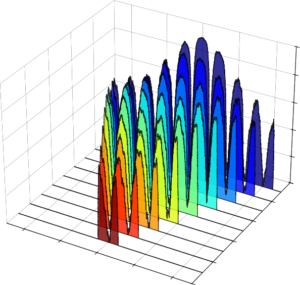
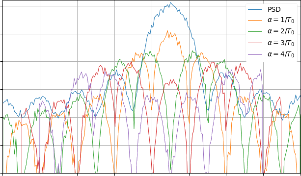
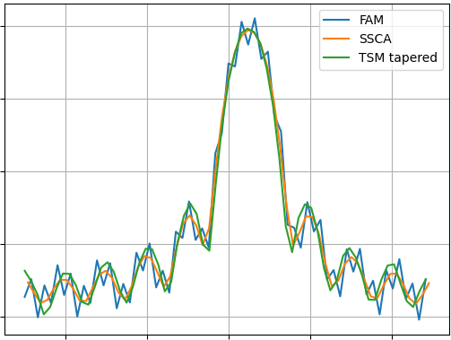
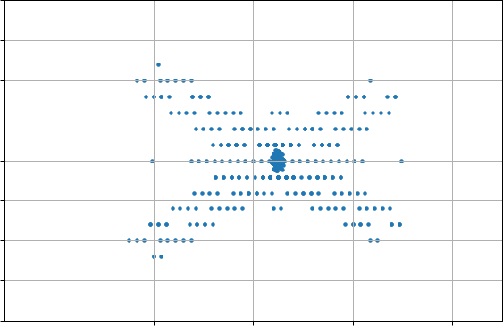
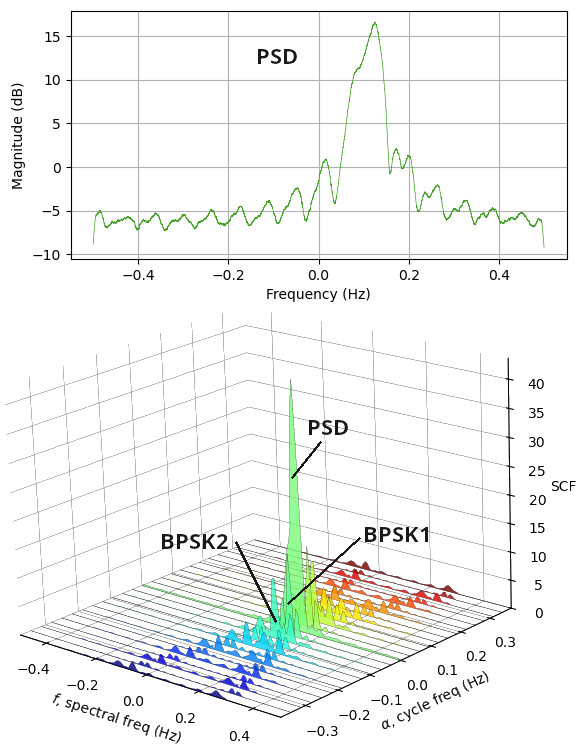
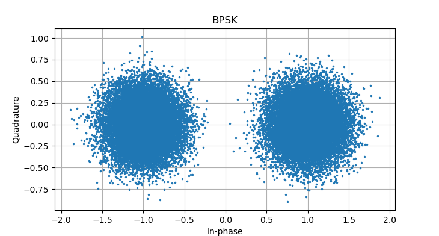

Mike Markowski, mike.ab3ap@gmail.com
This page is hosted at both
University of Delaware and
GitHub
Some eye candy generated by the code below (axis values removed):




Cyclostationary signal processing (CSP) exploits a property of communications signals, periodicity in statistical characteristics, that ordinary spectral analysis misses. It is a powerful tool for signal detection, classification, and parameter estimation in noisy or contested radio environments.
Here is a good example of CSP at work. Imagine two BPSK signals with different symbol rates and slightly different center frequencies. Looking at the combined BPSK signals - created with mksig.py -d, described below - the traditional PSD is unable to discern that two signals are overlapping. CSP, on the other hand, nicely pulls them apart and can provide further details on each. (Signal is from Eric April's 1991 paper, "The Advantages of Cyclostationary Processing." CSP plot by cspPlot.py, below.)

(Code to create 3d SCF slices above.)
For practicing engineers CSP has felt a bit out of reach until Dr. Chad Spooner created his cyclostationary blog. It is incredibly helpful bridging the gulf between theoretical and practical CSP, especially the trail of posts he put together for CSP beginners. Even at that, I was often challenged to make my code re-create what is presented in the blog. That says more about me than the blog!
I share my python efforts, hopefully useful to fellow students stuck working their ways through the blog. A variety of CSP routines are provided in the libcsp.py library. These are called by a script named 'blog' which steps through a number of lessons. While libcsp.py is fairly well written and documented, the blog script is admittedly ugly. It simply makes calls to libcsp and plots results, mimicking a sequence of 'CSP Beginner' pages whose URLs are printed out.
Another program, csp, is a little different. It does the same things as blog, but instead of plotting to screen the plots are bundled up in a small report. It steps through the CSP process of:
Blind analysis and spectral correlation function types are specified with csp's -b and -s flags below.
In the source code you will occasionally see dead blocks of code. You can delete them, but they were left so that the student is aware of options. For example, a loop version and vector version of the same SCF subroutine. The loop version is simpler to understand but slower. It can be a stepping stone to understanding the vector version. Similarly, smooth() has some commented out lines using traditional DSP smoothing but is much slower than the code in use.
These are after hours efforts by a newcomer to CSP, not an expert. Treat this code as best effort from a fellow CSP student, not an answer key from the professor. Please correct, improve and build on what I've started. The files are:
The code requires python3 as well as the following libraries:
If you want csp to create a pdf, install:
It is used to generate a pdf report and requires LaTeX. While pdflatex and LaTeX are not required to run the CSP programs, they are very much recommended. LaTeX is a free, powerful typesetting program heavily used in academia and research. Importantly here, it is easy to programmatically generate input files. LaTeX and dependencies are a 1+ GB download, rather large, and simply installing pdflatex typically brings in dependencies.
On linux, the programs will likely run simply by typing their names. The first python found in your path will be used. If this is not the correct python, use the explicit command:
/path/to/python progwhere prog is one of the python programs described below.
To generate plots from several blog posts, simply type the script name:
blog
Before each plot is presented, a URL to the corresponding blog entry is printed so you can easily jump to it.
The report generating program, csp, has a number of options:
$ csp -h Usage: csp -i sigFile -o outDir [-h] [-b fam|ssca] [-r fs] [-c fc] [-s fsm|tsm] [-t num] [-w win] -b: default ssca, blind estimation method, fam or ssca. -c: Hz, center frequency of input signal. -h: help message. -i: matlab or binary i/q signal file name. -o: directory where CSP analysis results will be written. -r: Hz, sample rate of input signal. -s: default tsm, spectral correlation function, fsm or tsm. -t: spectral coherence threshold, default 0.1. -w: FSM smoothing window or TSM block, in samples. Note: -c and -r are used with .iq files and ignored with .mat.
When you run the csp program, it creates a directory filled with files. Each of the graphs generated is there along with a single .tex file. If pdflatex is installed these files will be used to generate the pdf report which presents the raw CSP data in plots and tables along with some hardcoded text. The engineer then edits and expands the .tex report explaining the signal, meaning of strong cycle frequencies, and so on.
If your machine cannot comfortably accommodate the large TeX download, that's ok. The directory specified in the csp command still contains the plots and .tex file, but of course the pdf won't be generated. You can use the graphs as is or move the directory to another machine that has pdflatex installed. A typical run looks something like:
To see if this is something helpful to you, here is a sample report generated by csp using an 802.11a signal as input. My pdf reader is atril, but replace with whatever you use.csp -i wifi-802.11a.mat -o rptwifi -s fsm atril rptwifi/csp.pdf
To generate IQ test signals, use mksig.py:
$ mksig.py -h
Usage: mksig.py [-b baud] [-c fc] [-d] [-f] [-h] [-n n] [-o out]
[-r fs] [-s snr] [-t type]
-b: default 0.1, baud or symbols/sec.
-c: default 0, center freq in Hz.
-d: dual BPSK example, creates bpskDual.iq and bpskDual.mat.
-f: use square root raised cosine pulse shaping filter.
-h: help message.
-n: default 10, number of symbols.
-o: output file name without extension.
-p: default 0, phase noise random intensity.
-r: default 1, sample rate in Hz.
-s: default 30, SNR in dB.
-t: default bpsk, type of signal. Any of
bpsk, qpsk, 4psk, 8psk, 4qam, 16qam, 64qam.
The program creates two files. One is raw I/Q with a .iq extension, and the other is a Matlab 5.0 file with .mat extension. I prefer using the .mat file because all signal info is in the file and I do not need to specify it on command line.
Mksig.py can create the CSP demo signal described and pictured above from Eric April's 1991 paper. To create and analyze the overlapping BPSK signals:
where rpt is a directory that will contain many plots and tex files generated by csp.mksig.py -d csp -i bpskDual.mat -o rpt atril rpt/csp.pdf
You might also want to create the signal used in many cyclostationary.blog articles:
mksig.py -b 0.1 -c 0.05 -n 4000 -s 10 -t bpsk -o bpsk

This code provides foundational CSP calculations that follow the CSP beginner trail but can easily be extended to become more advanced CSP topics.
If you find bugs or have improvements, enhancements are welcome! If you have CSP questions, there is a certain blog whose author is better equipped to help!